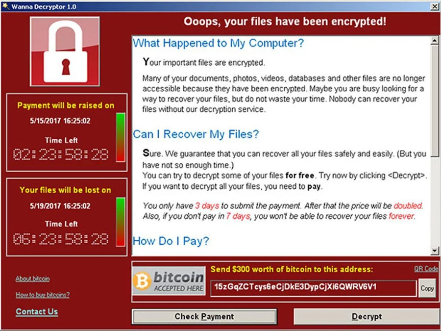

Mes documents.
Parcours et projets
Certifications et attestations


Veille technologique
Pendant ma formation, j’ai suivi le lien entre obsolescence logicielle et rançongiciels, notamment à travers la fin du support de Windows 10 et le cas WannaCry.
Obsolescence logicielle et maintenance du parc
J’ai étudié les conséquences de la fin du support d’un logiciel sur les postes qui en dépendent. Pour préparer une migration, j’ai distingué les postes concernés, les applications à tester et les contraintes de compatibilité.
Le passage de Windows 10 à Windows 11 m’a servi de cas concret pour relier le suivi des versions au travail du support informatique.
Rançongiciels et continuité de service
À partir du cas WannaCry, j’ai étudié ce qu’une indisponibilité des postes et des fichiers implique pour les utilisateurs. Ma veille abordait aussi la double extorsion et la différence entre restaurer des fichiers et gérer une fuite de données.
